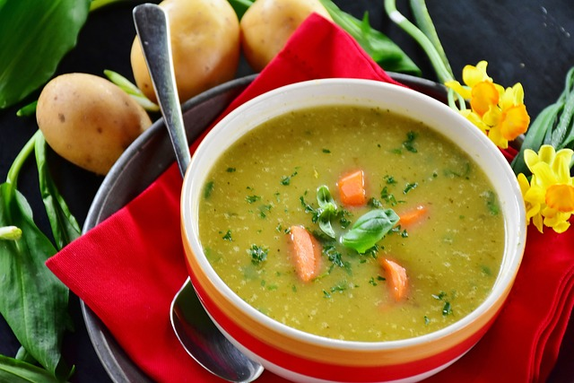

Soup

Preparation and ingredients
This homemade vegetable soup is healthy, easy to make, and tastes fantastic.
This vegetable-packed soup is easy to make and tastes incredible.
Ingredients
- Sweat onions
- Carrots
- potatoes
- Olive oil
- Tomato paste
- Garlic
- Spices, pepper and salt
Recipe instructions
- Pour in vegetable or chicken stock, a can of diced tomatoes, potatoes, cabbage, and bay leaves.
- Simmer until the veggies are tender (about 20 minutes).
- Add frozen peas and cook for five more minutes.
- Season to taste with more salt, pepper, and a little acid like apple cider vinegar or lemon juice.
Enjoy your soup during a cool evening or maybe for brunch
Any sugestion let me now it!!!
Home page